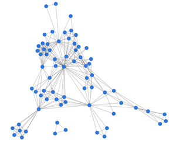
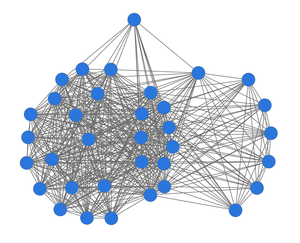

<!doctype html>
<html lang="de">
	<head>
		<meta charset="utf-8">
		<meta name="viewport" content="width=device-width, initial-scale=1.0, maximum-scale=1.0, user-scalable=no">

		<title>DLINA Presentation, Bayreuth</title>

        <meta name="description" content="Network Analysis of Dramatic Texts" />
        <meta name="author" content="Frank Fischer" />
        <meta name="author" content="Peer Trilcke" />

        <meta name="apple-mobile-web-app-capable" content="yes" />
        <meta name="apple-mobile-web-app-status-bar-style" content="black-translucent" />

        <meta name="viewport" content="width=device-width, initial-scale=1.0, maximum-scale=1.0, user-scalable=no, minimal-ui" />

        <link rel="stylesheet" href="../lib/reveal/css/reveal.css" />
        <link rel="stylesheet" href="../lib/reveal/css/theme/white.css" id="theme" />

        <!-- adjustments for zenburn.css -->
        <link rel="stylesheet" href="custom.css">

        <!-- Code syntax highlighting -->
        <link rel="stylesheet" href="../lib/reveal/lib/css/zenburn.css" />

		<!-- Printing and PDF exports -->
		<script>
			var link = document.createElement( 'link' );
			link.rel = 'stylesheet';
			link.type = 'text/css';
			link.href = window.location.search.match( /print-pdf/gi ) ? '../lib/reveal/css/print/pdf.css' : '../lib/reveal/css/print/paper.css';
			document.getElementsByTagName( 'head' )[0].appendChild( link );
		</script>
	</head>
	<body>
		<div class="reveal">
			<div class="slides">
			    <section data-markdown="" data-separator="^\n---\n" data-separator-vertical="^\n--\n" data-charset="utf-8">
<script type="text/template">

## Doing Digital Literary Studies
### Am Beispiel von dlina

<br />
Peer Trilcke¹ und Frank Fischer²<br />für die dlina-Arbeitsgruppe<!-- .element: style="font-size:0.8em;" -->

<br />
¹ Universität Potsdam / Institut für Germanistik &amp; Theodor-Fontane-Archiv<br />
² Higher School of Economics (Moskau) &amp; DARIAH-EU<!-- .element: style="font-size:0.6em;" -->

<!-- .element: style="font-size:0.6em;" -->¹ [twitter.com/peertrilcke](https://twitter.com/peertrilcke)<br />
² [twitter.com/umblaetterer](https://twitter.com/umblaetterer)

- <!-- .element: style="font-size:0.7em;" -->Blog: https://dlina.github.io
- <!-- .element: style="font-size:0.7em;" -->GitHub: https://github.com/dlina

<br />
<small>[ Workshop »Neue Forschungsgegenstände und Methoden? Wie Digitalität<br />die Geisteswissenschaften verändert« · Bayreuth, 24. März 2017 ]</small>

--

## Gliederung

<br />

1. Einleitung
2. Aus der Praxis: Zum Beispiel ein Hackathon
3. Epistemische Dinge: Von Zwischenformaten und Korpora
4. Studien: Dramengeschichte, Small Worlds
5. Schluss

---

## 1. Einleitung

---

## 2. Aus der Praxis:<br />Zum Beispiel ein Hackathon

--

### dlina-Hackathon, Potsdam, November/Dezember 2016

<br />
<!-- .element width="600px;" -->

--

## ›Digitale‹ und ›traditonelle Literaturwissenschaft‹

- Differente Praktiken, doch gemeinsame Gegenstände?

- Allerdings: Forschungsbemühungen richten sich weniger auf ›natürliche Objekte‹, sondern vielmehr auf ›epistemische Dinge‹ (Rheinberger 1992 u.&nbsp;ö.; Martus 2015);<!-- .element: class="fragment" -->

- ›epistemische Dinge‹ aber sind gekoppelt an einen »spezifischen Repräsentationsraum« (Hagner et al. 1994:&nbsp;8); sie sind eingebettet in einen Zusammenhang aus Praktiken und technischen Dingen.<!-- .element: class="fragment" -->

--

### ›Digitale‹ und ›traditonelle Literaturwissenschaft‹

<br />
›Drama‹ als epistemisches Ding <u>der Literaturwissenschaft</u>, z.&nbsp;B.:

- ein ästhetisches Artefakt, ein soziales Artefakt etc.;
- vorliegend in einer vertrauenswürdigen Edition;
- umstellt von technischen Dingen wie Bibliotheken, Bibliographien, Standards und Konventionen der Edition, etablierten Forschungspositionen, Theorie- und Methodentraditionen usw.

--

### ›Digitale‹ und ›traditonelle Literaturwissenschaft‹

<br />
›Drama‹ als epistemisches Ding <u>in unserer Arbeitsgruppe</u>:

- eine nach spezifischen Anforderungen geformte und mit spezifischen Metadaten versehen Datei;
- vorliegend in einer Datenbank oder vorgehalten im Zwischenspeicher eines Programms;
- umstellt von technischen Dingen wie Repositorien, Datenbanksystemen, Codierungsstandards, Vokabular und Syntax von Programmier- und Abfragesprachen usw.

--

### ›Digitale‹ und ›traditonelle Literaturwissenschaft‹

<br />
- Differente Praktiken und differente epistemische Dinge?
- Doch Hoffnung auf eine ähnliche ›Fragwürdigkeit‹ der epistemischen Dinge, begründet in deren »autopoietischen Aspekt« (Martus 2015: 28), …<!-- .element: class="fragment" -->
- … und damit auf die Möglichkeit, ›neue Antworten‹ auf ›alte Fragen‹ zu finden?<!-- .element: class="fragment" -->
- Dies auch als Erwartungshaltung gegenüber der ›digitalen Literaturwissenschaft‹ – »legitimatorische[r] Aspekt« (Martus 2015: 25).<!-- .element: class="fragment" -->

---

### 3. Epistemische Dinge:<br />Von Zwischenformaten und Korpora

--

### Das epistemische Ding der dlina-Arbeitsgruppe

<br />
- Dramentext?
  - *Eher nicht.*
- Spezifisch codierte TEI-Datei des Dramentextes?
  - <!-- .element: class="fragment" -->*Auch nicht so recht.*
-  Das Zwischenformat?<!-- .element: class="fragment" -->

--

### Was heißt ›Netzwerkanalyse dramatischer Texte‹?

<br />
- Netzwerke = Elemente (Knoten) und deren Relationen (Kanten);
- Dramen-Netzwerke (in unserem Fall) = Figuren (Knoten) und deren Interaktion (Kanten);
- Interaktion (in unserem Fall) = zwei Figuren vollziehen innerhalb desselben Dramensegments (in der Regel: innerhalb einer Szene) jeweils mindestens einen Sprechakt.

--


--


--


--


--


--


--

### Das Zwischenformat

<br />
- eine abstrakte und manipulierte Modellierung von Dramentexten
- enthält Metadaten
- enthält netzwerkbasierte Strukturinformationen

--

### Das Zwischenformat:<br />Ein exemplarischer Auszug

<br />


--

### Das epistemische Ding der<br />dlina-Arbeitsgruppe

<br />
- Dramentext?
  - *Eher nicht.*
- Spezifisch codierte TEI-Datei des Dramentextes?
  - *Auch nicht so recht.*
- Das Zwischenformat?
  - *Noch nicht präzise genug.*

--


| Einige Netzwerkdaten | |
|:-|:-|
| Character Count | 13 |
| Density | 0,37 |
| Average Degree | 4,46 |
| Average Path Length | 1,78 |
| Clustering Coefficient | 0,52 |

<br />
<small>Netzwerkgraph und -daten zu Lessing: *Emilia Galotti* (1772)</small>

--

<!-- .element width="800px;" -->

<small>Vgl. auch »Distant-Reading Showcase«: Superposter mit den Netzwerkgraphen zu 465 deutschsprachigen Dramen. – DOI: [10.6084/m9.figshare.3101203.v1](https://doi.org/10.6084/m9.figshare.3101203.v1).</small>

--

### Das epistemische Ding der<br />dlina-Arbeitsgruppe

<br />
<br />
- Dramentext?
  - *Eher nicht.*
- Spezifisch codierte TEI-Datei des Dramentextes?
  - *Auch nicht so recht.*
- Das Zwischenformat?
  - *Noch nicht präzise genug.*
- Ein Korpus, bestehend aus Zwischenformaten.

---

### 4. Studien:<br />Dramengeschichte, Small Worlds

--

### Dramengeschichte

<!-- .element width="700px;" -->

<small>Average Degree der Dramennetzwerke im dlina-Korpus (N = 465), Mittelwert pro Dekade</small>

--

### Dramengeschichte

<br />
- Neue Antwort auf die Frage nach dem Verlauf der Dramengeschichte, nach ihrem Zusammenspiel mit der sozialen Modernisierung?<!-- .element: style="font-size:0.85em;" -->

  - <!-- .element: style="font-size:0.85em;" -->Nein, dass das Drama ab der zweiten Hälfte des 18.&nbsp;Jahrhunderts Modernisierungseffekte durchspielt, ist bekannt.
  - <!-- .element: style="font-size:0.85em;" -->Ja, dass sich diese Effekte sehr präzise in der Zunahme der individuellen Figureninteraktionen niederschlagen, war nicht bekannt.<!-- .element: class="fragment" -->
  - <!-- .element: style="font-size:0.85em;" -->Ja, dies ist eine neue Antwort, aber nein, das ist keine Antwort, die man üblicherweise auf eine literaturwissenschaftliche Frage gibt.<!-- .element: class="fragment" -->

--

### Small Worlds

<br />

| | | |
|:-:|:-:|:-:|
| <!-- .element width="200px;" --> | <!-- .element width="200px;" --> | <!-- .element width="200px;" --> |
| Reguläres Netzwerk | Small World | Random-Netzwerk |

<br /><br />
<small>Relationale Definition des Netzwerktyps ›Small World‹</small>

--

### Small Worlds

<br />
<!-- .element width="250px;" -->
&nbsp;&nbsp;&nbsp;&nbsp;&nbsp;&nbsp;&nbsp;
<!-- .element width="250px;" -->

<small>Charakteristika von Small-World-Netzwerken:<br />Cliquen (links), zentrale Figur(en) (rechts)</small>

<br />
<small>Netzwerkgraph zu Goethe: *Götz von Berlichingen* (1773)</small>

--

### Small Worlds

<br />
<!-- .element width="700px;" -->

<small>17 Dramen (grüne Rauten) im dlina-Korpus erfüllen die Small-World-Kriterien</small>

--

### Small Worlds

<br />
<table>
  <tbody>
    <tr>
      <td style="font-size:0.6em;text-align:left;">Goethe, *Götz* (1773) <br><b>Drama des ›großen Individuums‹</b> </td>
      <td style="font-size:0.6em;text-align:right;">Mühsam, *Judas* (1921) <br><b>Drama der Masse</b></td>
    </tr>
    <tr>
      <td><div style="text-align:left;"></div></td>
      <td><div style="text-align:right;"></div></td>
    </tr>
    <tr>
      <td style="font-size:0.6em;text-align:left;"><b>Aristokratisches Modell?</b></td>
      <td style="font-size:0.6em;text-align:right;"><b>Kommunistisches Modell?</b></td>
    </tr>
  </tbody>
</table>

<br/>
<small>Zwei entgegengesetzte Dramen-Netzwerktypen</small>

---

### 5. Schluss

--

### Schluss

<br />
- Fragwürdigkeit resultiert wesentlich …
  - aus den technischen Dingen;
  - aus der Korpusartigkeit des epistemischen Dings.<br /><br />
- Beides ist Effekt der Digitalität:
  - Digitalität der Methoden
  - Digitalität der ›Gegenstände‹

--

### Schluss

<br />
**›Digitale‹ und ›traditionelle Literaturwissenschaft‹?**

<br />
- Inwiefern spielt es eigentlich für die ›traditionelle Literaturwissenschaft‹ eine Rolle, dass auch ihre Gegenstände immer häufiger digital vorliegen?<!-- .element: style="font-size:0.9em;" -->
- Inwiefern spielt es eine Rolle, dass der ›traditionellen Literaturwissenschaft‹ zahlreiche Methoden der digitalen Analyse prinzipiell zu Verfügung stehen – Methoden, die bei der Repräsentation und Analyse der faktualen Kommunikation heute bereits einen erheblichen Raum einnehmen?<!-- .element: style="font-size:0.9em;" -->

--

### Schluss

<br />
**›Digitale‹ und ›traditionelle Literaturwissenschaft‹?**

<br />
- Polarisierung ist Unsinn.
- Als gäbe es *eine* ›traditionelle Literaturwissenschaft‹
- Es gibt viele Literaturwissenschaften. –<br /><br />
- Und einige davon weisen erhebliche Überschneidungen mit der ›digitalen Literaturwissenschaft‹ auf.

--

## Weiterlesen

<br />
- [DLINA-Blog (lina.digital)](http://lina.digital)
- [DLINA-Daten auf GitHub](https://github.com/dlina)
- [*dramavis* auf GitHub](https://github.com/lehkost/dramavis)
- [*Play(s)* auf GitHub](https://github.com/mathias-goebel/mobile-plays)
- Twitter:
  - [#dlina](https://twitter.com/search?f=tweets&vertical=default&q=%23dlina&src=typd)
  - Frank Fischer ([@umblaetterer](https://twitter.com/umblaetterer))
  - Mathias Göbel ([@goebel_m](https://twitter.com/goebel_m))
  - Christopher Kittel ([@chris_kittel](https://twitter.com/chris_kittel))
  - Peer Trilcke ([@peertrilcke](https://twitter.com/peertrilcke))

---

## 6. Bibliografie

--

## Zitierte Literatur

<small>
- Antonijević 2015
- Hagner et al. 1994
- Martus 2015
- Moretti 2013
- Nyhan/Flinn 2016
- Rheinberger 1994
- Rheinberger 2001
- Schruhl [forthcoming]
- Watts/Strogatz 1998

</small>

--

Ende der Präsentation 🐬

</script>
			    </section>
			</div>
		</div>

        <script src="../lib/reveal/lib/js/head.min.js"></script>
        <script src="../lib/reveal/js/reveal.js"></script>

		<script>
			// More info https://github.com/hakimel/reveal.js#configuration
			Reveal.initialize({
				history: true,
				transition: 'none',

				// More info https://github.com/hakimel/reveal.js#dependencies
				dependencies: [
					{ src: '../lib/reveal/plugin/markdown/marked.js' },
					{ src: '../lib/reveal/plugin/markdown/markdown.js' },
					{ src: '../lib/reveal/plugin/notes/notes.js', async: true },
					{ src: '../lib/reveal/plugin/highlight/highlight.js', async: true, callback: function() { hljs.initHighlightingOnLoad(); } }
				]
			});
		</script>
	</body>
</html>
